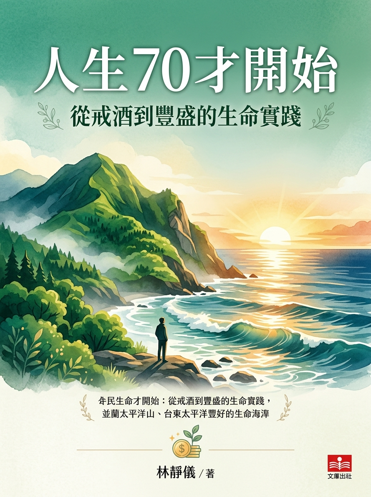

從戒酒到豐盛的生命實踐
—— 阿鐘的下半場人生實踐：身心靈健康、理財覺醒與簡單富足之道
如果第一本書是阿鐘在懸崖邊緣的「自我救贖」，那這第二本書，便是一份扎扎實實的「下半場生活實踐指南」。從江老師營養課修復身體、周冠男教授指數化理財、八里溪流浪幼犬小黑的生命課，到打破匱乏感的配得豐盛宣言！

告別酒精後的身體修復日記、江老師好油營養觀念、林語堂閒適減法哲學。
第一桶金實踐、周冠男指數化投資ETF買進持有、賣地買股活化沉睡資產。
幼犬小黑七日因緣與圓滿放手、退而不休在地創生、伴侶相處與都蘭山海慢活。
金錢是僕人非主人、打造專屬快樂資產負債表、打破自我限制迎向身心財平衡。
戒酒不是終點，而是邁向全面豐盛的起點
定位：墜落、覺醒與工具突破
記錄長達數十年的酗酒泥淖、慈濟月光的反思、福格微習慣與生成式 AI 工具結合，在短時間內完成 14 天出書逆襲的生命救贖。
定位：重建、扎根與全面豐盛
徹底告別重複的酗酒歷史，聚焦於七十歲之後的具體生活實踐。全面整合身心修復（好油與飲食）、現代投資理財（周冠男指數化ETF、賣地買股）、生活人際（小黑七日因緣）與配得豐盛的心靈躍升！
理性智慧與感性溫度的完美融合，構建人生下半場的幸福生活哲學
0.1 都蘭，我的心靈原鄉：在山海之間重新呼吸 ｜ 0.2 從第一本到第二本：戒酒不是終點，而是豐盛的起點 ｜ 0.3 本書地圖：身心靈、理財與生命實踐的三重奏
16.1 人生七十才開始：年齡只是數字，成長永無止境 ｜ 16.2 給同路人的一封信：無論過去如何，你都可以從今天開始翻轉 ｜ 16.3 航向未來的下半場：平靜、豐盛且自由地活著！
以最優惠的價格搶先支持阿鐘第二本書，獲得完整文稿與後續出版更新！
預售特惠：NT$ 99 元
權益內容：即刻獲贈最新全文稿件（Word/PDF）＋ 正式版發行優先推送
匯款代碼：700 (中華郵政) 或 銀行專戶
雙書特惠：NT$ 180 元 原價 NT$ 570
包含：《從酒鬼到AI作家》(完整版) ＋ 《人生70才開始》(預售全稿)
適合對象：想完整了解阿鐘從逆襲救贖到豐盛實踐全歷程的讀者